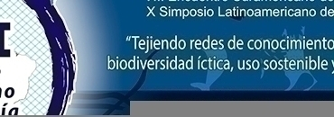

O Congresso Colombiano de Ictiologia é um evento de destaque na área da ictiologia, reunindo especialistas, pesquisadores e estudiosos para discutir e compartilhar conhecimentos sobre peixes e ecossistemas aquáticos.
Organizado pela Universidade Nacional de Los Llanos, este congresso oferece uma plataforma única para a troca de experiências, apresentação de pesquisas e debates sobre temas relevantes para a conservação e estudo dos peixes na região.
Com edições anteriores bem-sucedidas, o Congresso Colombiano de Ictiologia é reconhecido por sua qualidade acadêmica e contribuição para o avanço da ciência ictiológica na Colômbia. Além disso, o evento promove a integração entre os profissionais da área, fortalecendo redes de colaboração e impulsionando o desenvolvimento da pesquisa em ictiologia no país.
Por meio de palestras, mesas-redondas, apresentações de trabalhos científicos e atividades interativas, o congresso proporciona um ambiente enriquecedor para a disseminação do conhecimento e a promoção do diálogo entre os participantes. Com uma programação diversificada e conteúdo atualizado, o Congresso Colombiano de Ictiologia é uma oportunidade imperdível para aqueles interessados no estudo e conservação dos peixes e seus habitats aquáticos na Colômbia.
Acesse o site